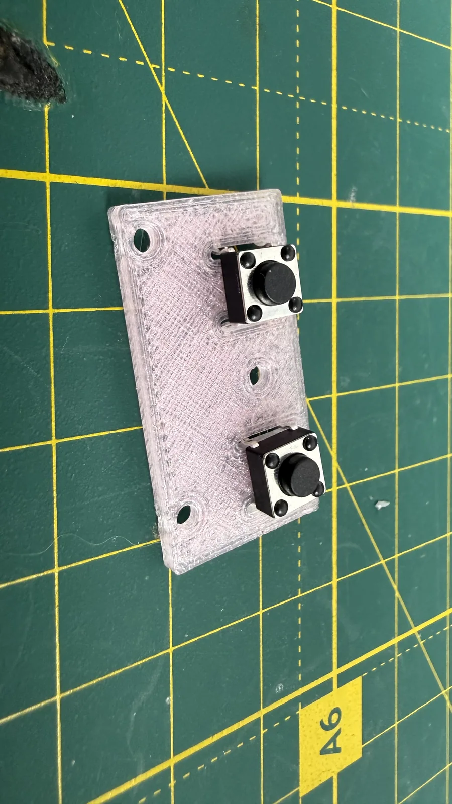
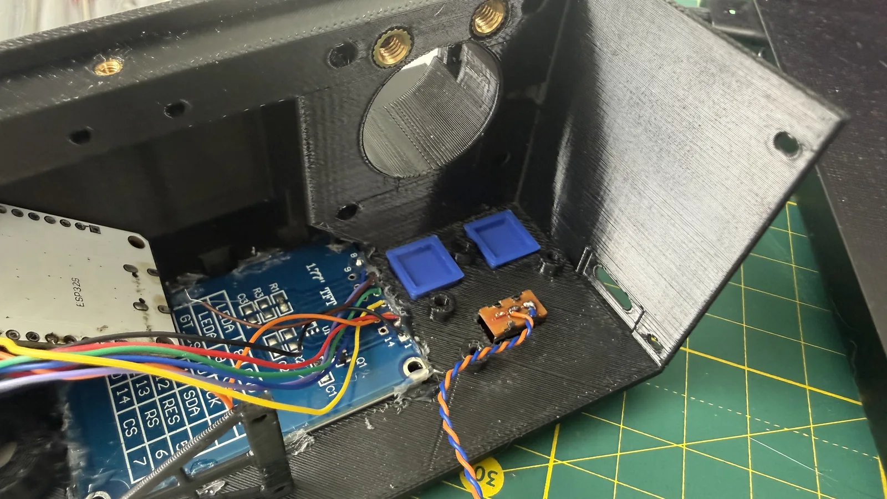
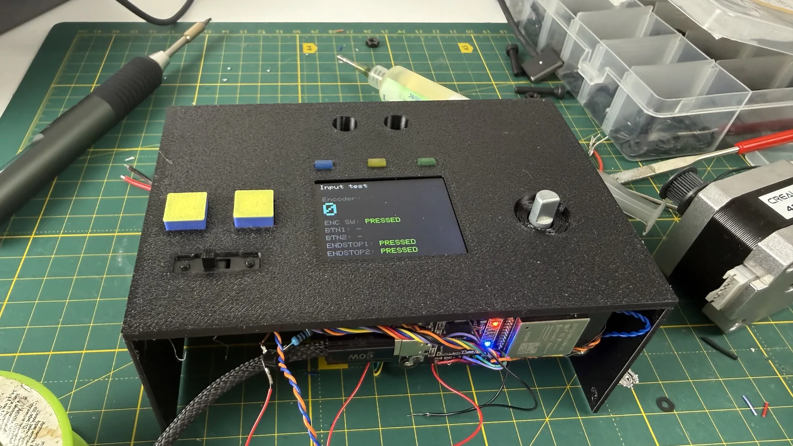
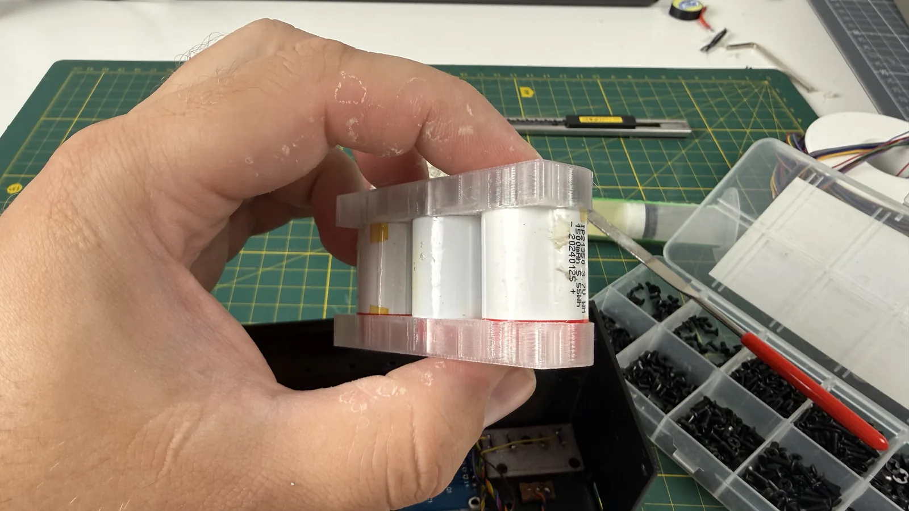
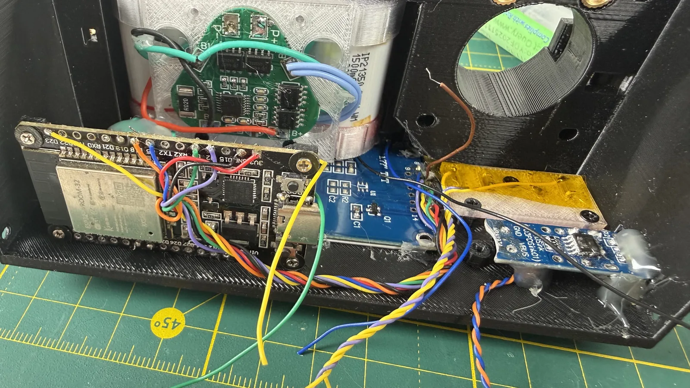

← все заметки
06.08.2026#слайдер #электроника
Продолжил работу над слайдером, занялся кнопками. Думал, что это будет всё, но в итоге сделал сильно больше, чем ожидал — хотя качеством работы местами не очень доволен.
Подключил энкодер и все кнопки, прошил тестовый экран — видно, что всё откликается: энкодер крутится, концевики срабатывают.
Кроме кнопок сделал батарейный отсек — разместил в нём аккумуляторы так, чтобы ничего не замкнуло и чтобы они занимали как можно меньше места.
На отсек присобачил простенькую плату BMS, которая раньше использовалась в другом проекте — думаю, пока её тут хватит.
Монтаж местами не очень аккуратный: где-то проводов не добрал, где-то перебрал, и, как видно, я активно использую термоклей. Под всё можно было сделать аккуратные крепления, но не хотелось с этим возиться — часть вещей проще определить по месту.
В принципе, значительная часть работы уже готова. Осталось разместить несколько модулей и мотор, что будет, наверное, непросто — часть компонентов нужно снять со старой макетной платы.


Подключил энкодер и все кнопки, прошил тестовый экран — видно, что всё откликается: энкодер крутится, концевики срабатывают.

Кроме кнопок сделал батарейный отсек — разместил в нём аккумуляторы так, чтобы ничего не замкнуло и чтобы они занимали как можно меньше места.

На отсек присобачил простенькую плату BMS, которая раньше использовалась в другом проекте — думаю, пока её тут хватит.

Монтаж местами не очень аккуратный: где-то проводов не добрал, где-то перебрал, и, как видно, я активно использую термоклей. Под всё можно было сделать аккуратные крепления, но не хотелось с этим возиться — часть вещей проще определить по месту.
В принципе, значительная часть работы уже готова. Осталось разместить несколько модулей и мотор, что будет, наверное, непросто — часть компонентов нужно снять со старой макетной платы.
Комментарии